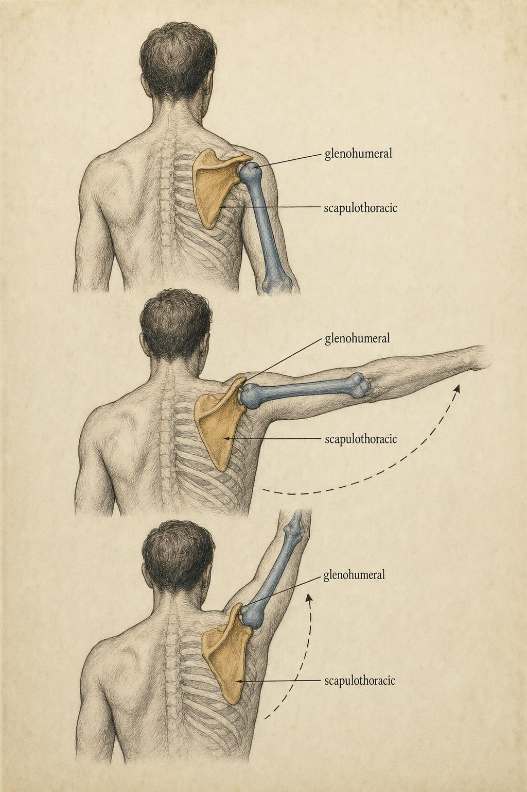
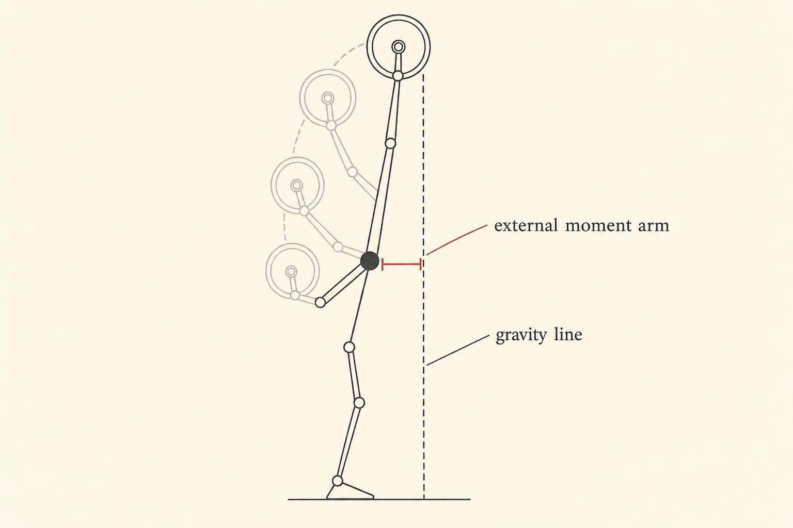

Pressing and the Shoulder: The Most Mobile, Most Negotiated Joint
Why the joint built for the greatest range of motion in the body has to trade away its own stability, and what that trade means for every press loaded overhead.
Stand in front of a loaded barbell resting across the front of the shoulders and press it overhead. Somewhere between the chin and the crown of the head, the bar will slow. It is not that the muscles suddenly got weaker in that instant. The whole rep takes under two seconds, and if a learner were wired up to measure the electrical activity in the pressing muscles, that signal would hold steady, even climb, right through the stall. Push past it and the bar speeds up again toward lockout as though the plates had gotten lighter. They did not. What changed was the geometry.
That region of hesitation has a name every experienced presser recognizes by feel: the sticking point. It is the clearest, most physical proof that a lift is a mechanics problem layered on top of a strength problem, and nowhere in the body does that layering get more interesting, or more consequential, than at the shoulder. This chapter is about why the shoulder behaves the way it does under a bar overhead: why the joint that gives a learner the greatest range of motion of any joint in the body is also the joint most dependent on a shoulder blade that has to travel, a small set of muscles that has to fire continuously just to keep the ball on the socket, and a moment arm that rewrites itself every few inches of bar travel.
Follow one learner through this chapter: Coralie, a thirty-four-year-old who has trained consistently for about three years. She can deadlift and squat well past her own bodyweight and moves through both lifts with obvious confidence. The overhead press is a different story. She has quietly avoided it for most of her training life, not because a coach told her to, but because the one time she loaded it heavy, she felt an uncomfortable pinch near the top of the movement and never went back. She wants to know two things: whether her shoulder is simply built differently than her training partner's, whose overhead press looks effortless, and whether avoiding the lift altogether was the right call or an overcorrection. Coralie is not a patient in this chapter and she is not a diagnosis waiting to happen. She is a stand-in for a question many learners eventually ask, and by the end of this chapter the mechanical vocabulary should be in place to think about her situation far more precisely than a single uncomfortable rep ever could on its own.
The shoulder is not one joint. It is a negotiated trade.
People talk casually about "the shoulder joint" as though the arm hangs from a single hinge, the way a door hangs from its frame. Mechanically, that is a convenient simplification and not much more. The joint doing the obvious rotating, the one most people picture when they think of the shoulder, is the glenohumeral joint: the rounded head of the humerus sitting against the shallow, saucer-shaped socket of the glenoid fossa on the shoulder blade. Compare the two surfaces and the mismatch is almost comic. The humeral head is roughly three times larger than the glenoid surface it rests against, closer to a golf ball balanced on a tee than a ball seated deep in a cup. That shallow socket is precisely what buys the shoulder its enormous range of motion. It is also precisely what the joint has to pay for with something else: inherent bony stability.
Compare it, for a moment, to the hip. The hip's acetabulum is a deep, cup-shaped socket that wraps most of the way around the femoral head, and the hip trades range of motion for exactly that built-in security; a healthy hip rarely dislocates without a substantial injury alongside it. The shoulder makes the opposite bargain. Its socket contains only a fraction of the ball at any given instant, which is why the shoulder is both the most mobile joint in the human body and, not coincidentally, the joint most prone to instability. A labrum, a ring of fibrocartilage rimming the glenoid, deepens the socket somewhat, and a surrounding capsule and set of ligaments add passive restraint near the end ranges of motion. But passive tissue can only do so much. For most of a press, from the bottom of the movement through the range where the sticking point lives, the joint is held together primarily by active muscular coordination, not by the shape of the bones.
That single fact reframes everything that follows in this chapter. If bone and ligament are not doing the bulk of the work, then something else has to. Two systems share that job, and both are the direct subject of this chapter: a shoulder blade that has to travel with the arm rather than sit still beneath it, and a small set of deep muscles whose primary purpose is not to move the arm but to keep the ball centered while other, larger muscles do the moving.
Scapulohumeral rhythm: steering the socket under the arm
Because the glenohumeral joint's socket is shallow and small, it cannot simply sit still while the arm swings through a large arc. If it tried, the humeral head would run out of socket to rest against well before the arm reached shoulder height, let alone overhead. So the socket itself has to move. The scapula, the shoulder blade, rotates and tilts against the back of the ribcage as the arm rises, continuously repositioning the glenoid so it stays underneath the moving humeral head. This coordinated relationship between the arm bone and the shoulder blade is called scapulohumeral rhythm, and it is the reason biomechanists treat the shoulder as a linked, multi-joint system rather than a single hinge.
The classic account of that rhythm comes from Inman, Saunders, and Abbott (1944), whose early roentgenographic work, aided by bone pins inserted directly into the scapula and humerus of a small number of subjects, produced the ratio still taught in anatomy courses today. For roughly every three degrees the arm elevates relative to the trunk, about two degrees occur at the glenohumeral joint and about one degree occurs at the scapulothoracic articulation, the sliding relationship between the shoulder blade and the ribcage beneath it. Expressed as a ratio between just the glenohumeral and scapulothoracic contributions, that works out to approximately two to one. It was a landmark finding: the first clear evidence that raising the arm is a shared project between two joints, not the output of one.
A fixed ratio, though, is a simplification, and more recent instrumented studies have shown how much that ratio actually moves around. McQuade and Smidt (1998) tracked twenty-five subjects with electromagnetic sensors and found the rhythm shifting continuously through the arc of motion, starting closer to eight to one early in elevation and settling toward roughly two to one later in the range during unloaded, passive movement. More important for anyone thinking about a loaded press, they found that adding external resistance changed the rhythm outright: under load, the ratio ran closer to one point nine to one early in the range and shifted to roughly four point five to one later on. In plain terms, how much the shoulder blade contributes to a given degree of arm elevation depends on both where a learner is in the range and how much weight is being moved. Load a press heavily and the scapula's job description changes mid-rep.
McClure, Michener, Sennett, and Karduna (2001) added a further layer using sensors fixed directly to bone pins: scapular motion during elevation is not confined to a single plane. Across scapular-plane elevation, the blade upwardly rotated by roughly fifty degrees, tilted posteriorly by roughly thirty degrees, and externally rotated by roughly twenty-four degrees, all at once. The socket, in other words, is not just sliding up and down the ribcage. It is being steered through three dimensions simultaneously, on a schedule that keeps changing as the arm rises and as load is added.

For our purposes, the number to remember is not a fixed ratio; it is the underlying principle. The position of the socket beneath the arm is an active, load-sensitive variable, not a fixed anatomical fact. When that coordination breaks down, when the scapula fails to rotate, tilt, and reposition on schedule, the consensus literature refers to the result as scapular dyskinesis. Kibler and colleagues (2013), summarizing the conclusions of an international consensus conference on the topic, were careful to frame dyskinesis as a potential impairment to shoulder function rather than a diagnosis in its own right, while also noting that impingement-type symptoms in the shoulder are particularly sensitive to it. That framing matters, and this course holds to it throughout: altered scapular motion, or a pinching or catching sensation during overhead work, is information. It is a sign that warrants professional evaluation, not a verdict a learner can render alone, and certainly not something to press through.
One muscle changes its job, four muscles hold the line
The deltoid's changing line of pull
Recall the core mechanical idea that governs how any muscle acts on a joint: a muscle's usefulness for producing rotation depends on its line of pull relative to the joint's axis, specifically on the perpendicular distance between that axis and the line of the muscle's tension, called its internal moment arm. A muscle whose line of pull runs at a wide angle to the bone has a long moment arm and turns its tension efficiently into rotation. A muscle whose line of pull runs nearly parallel to the bone, nearly straight through the joint, has almost no moment arm, and most of its tension does something other than rotate the limb: it compresses the joint surfaces together instead.
Nowhere does this play out more dramatically than at the shoulder, because the arm sweeps through such a wide arc that a muscle's geometry relative to the joint gets rewritten completely as the limb moves. The deltoid is the clearest case study. Hik and Ackland (2018), reviewing moment arm data across the deltoid's three regions along with the other muscles crossing the glenohumeral joint, found that the anterior and middle portions of the deltoid carry the largest elevator moment arms of any muscle at the joint during pressing-type motion, but that those moment arm values change substantially with joint angle. Hughes, Niebur, Liu, and An (1997), computing instantaneous moment arms for ten shoulder muscles, reported the same pattern: the deltoid dominates elevation, with the anterior head leading in forward planes of motion and the middle head leading in the scapular and coronal planes typical of an overhead press.
Picture the arm hanging at the side, beginning a press or a raise from the bottom. At that low starting angle, the deltoid's fibers run almost straight up the length of the humerus, nearly parallel to the bone. Its line of pull points largely up into the socket rather than around the joint. The moment arm is short, and most of the deltoid's tension jams the humeral head into the glenoid rather than rotating the arm upward. This is exactly why the first few inches off the bottom of a press or a lateral raise feel disproportionately hard for how little the arm has actually moved: the muscle is working, but the geometry is not yet letting that work count as rotation. As the arm climbs toward shoulder height, the fiber angle opens up, the moment arm lengthens toward its peak, and the same tension suddenly produces far more useful rotation.
The rotator cuff's steady job
If the deltoid's geometry is unfavorable at the bottom of the range, something has to do the work of both initiating the lift and keeping the ball from riding up and forward under that mostly compressive pull. That job belongs to the rotator cuff: the supraspinatus, infraspinatus, teres minor, and subscapularis, four comparatively small muscles that wrap around the front, top, and back of the humeral head like a sleeve. Their job is not primarily to move the arm through large ranges. It is to hold the ball against the socket while larger muscles such as the deltoid, the pectoralis major, and the latissimus dorsi do the bulk of the moving.
Mechanically, the cuff achieves this through what is often called concavity compression: by pulling the humeral head inward and slightly downward, the cuff presses the ball into the concave surface of the glenoid, resisting the tendency of the deltoid's largely vertical pull to translate the head upward toward the bony arch of the acromion. Nazarian and colleagues (2020), working with cadaveric shoulders, demonstrated this directly: a physiologically realistic pattern of rotator cuff loading during scapular-plane abduction minimized upward translation of the humeral head compared with simplified loading patterns, while disrupting that balanced pattern allowed the head to migrate superiorly. The cuff and the deltoid are often described as forming a force couple: the deltoid supplies the large, mostly vertical pull that elevates the arm, and the cuff supplies the smaller, angled pull that keeps that same vertical force from simply pushing the ball out of its shallow socket. Neither muscle group does its job well without the other doing its job at the same time, on every rep, through the entire range.
This is also why the cuff's workload is not evenly distributed through a press. Early in the range, when the deltoid's own moment arm is short and much of its tension is compressive rather than rotational, the cuff has to work especially hard both to help initiate elevation and to manage that compressive load. As the arm approaches and passes shoulder height and the deltoid's geometry becomes favorable, the cuff's relative contribution to raw force output drops, but its centering job does not disappear. Near the top of the range, as the humeral head approaches the underside of the acromion and the space available for the rotator cuff tendons to glide through narrows, precise centering again becomes critical. A cuff that is fatigued, weak, or poorly coordinated at exactly that point in the range is a plausible mechanical contributor to the pinching sensation some learners feel near lockout, though whether that is what is happening in any specific case is a question for a qualified clinician, not for a course like this one.
The external ledger: why the sticking point is not a strength problem
Everything discussed so far concerns the internal side of the ledger, the leverage a muscle has to work with. The sticking point lives on the other side of that ledger entirely: the external moment arm, the perpendicular distance from the joint's axis of rotation to the line along which gravity pulls the bar straight down. Multiply that external moment arm by the load and the result is the external moment, the rotational demand the muscles have to overcome at that instant. In a press, that external moment arm is not fixed, because the bar and the shoulder do not travel along the same vertical line for the entire lift.
The clearest experimental picture of what happens at the sticking point comes from Elliott, Wilson, and Kerr (1989), who filmed ten elite powerlifters with three-dimensional cinematography while recording surface electromyography during bench pressing at a range of loads up to a maximal, near-failure effort. Two of their findings anchor everything this chapter has to say about the sticking point. First, electromyographic activity in the prime moving muscles, the chest, the anterior deltoid, and the triceps, peaked early in the ascent and stayed elevated. It did not dip during the sticking region. The lifters were pushing exactly as hard through the stall as everywhere else in the lift. Second, and this is the mechanical heart of the finding, while the moment arm at the shoulder decreased steadily through the ascent, the moment arm at the elbow reached its minimum value precisely during the sticking region before increasing again as the bar continued upward.
The sticking region reflects a mechanically poor position for producing force, not a drop in muscular effort.
after Elliott, Wilson & Kerr (1989)
Read that carefully, because it overturns the story most learners tell themselves in the moment. The bar does not slow because effort drops. It slows because the body arrives, briefly, at the single worst combination of joint angles for converting muscular tension into upward bar velocity. Effort stays maxed out the entire time. Only the geometry changes. That is arguably the single most useful reframe this chapter has to offer: the sticking point is a mechanics problem wearing a strength problem's costume.
The overhead press makes this even more vivid than the bench press, because its sticking region is so reliably located just above the collarbones and in front of the face, exactly where the bar has to clear the chin on its way up. The reason is bar path. To clear the head without hitting it, the bar has to travel a slightly curved route: forward and around the chin, then back in over the crown of the head as the arm approaches lockout. Any segment of that path where the bar sits forward of the shoulder joint lengthens the external moment arm at that instant, because the perpendicular distance from the joint to the bar's vertical line of gravity grows the farther forward the bar drifts. The farther the bar strays in front of the shoulder, the longer that lever, and the larger the external moment the deltoid and its supporting cast have to overcome. A bar path that drifts forward is, in a very literal sense, a self-inflicted increase in how heavy the bar feels at that point in the lift.
Evangelista and colleagues (2025) formalized this relationship by modeling both the bench press and the overhead press as a chain of rigid links connected by joints, with the muscles crossing those joints constrained by the barbell's path, and deriving the resulting equations of motion directly. Their model reproduces the origin of the sticking region from first principles and quantifies how the torque demand at the shoulder and the torque demand at the elbow trade off across the different phases of the lift, all driven by the geometry of the barbell's constrained path. It is a satisfying confirmation that the stall in an overhead press is not a mysterious failure of will. Given the link lengths of a particular learner's arm and the path the bar actually travels, the location and severity of the sticking region falls directly out of the mathematics.

Grip, bar path, and the overhead question: who should press overhead
If bar path largely determines how the external moment arm behaves at the shoulder, grip width determines how the resulting demand gets divided between the shoulder and the elbow, and how much horizontal force the arms have to manage along the way. The bench press offers the cleanest natural experiment on this point, and Larsen and colleagues (2021) ran it directly: fourteen trained learners performed one-repetition maximum (1RM) bench presses at wide, medium, and narrow grips while researchers tracked joint kinematics, horizontal forces, and muscle activity through the sticking region.
Their results map cleanly onto the moment arm logic already developed in this chapter. A wider grip shortens the vertical distance the bar has to travel, meaning less total range of motion, and orients the upper arm further out to the side, which maximizes the chest and middle deltoid's leverage while reducing the elbow's share of the work. A narrower grip lengthens the range, tucks the elbows in closer to the torso, and shifts more of the load onto the triceps; Larsen and colleagues found triceps activity was consistently greater with medium and narrow grips than with a wide grip. Wide and medium grips also produced greater horizontal moments at the shoulder during the sticking region than the narrow grip, and, practically, both wide and medium grips allowed learners to lift more total load than the narrow grip did.
There is a cost hidden in those numbers, though. The wide grip generated substantial lateral, outward-directed forces during the sticking region, on the order of thirteen to fifteen percent of the load pushing sideways, where medium and narrow grips produced forces that were more balanced or directed medially. The same wide, out-to-the-side arm position that maximizes leverage is also the position that places the greatest demand on the shoulder's soft-tissue restraints, the capsule, the ligaments, and the rotator cuff working together to keep the joint centered. That is the theme of this entire chapter made concrete in a single number: the shoulder's mobility lets a learner chase extra leverage by opening the arm wider, but every degree of that trade spends stability that has to be paid for by tissue and by coordination rather than by bone.
This brings us to the overhead question directly: not simply how to press more weight overhead, but whether, and how, a given learner should be pressing overhead at all. There is no single answer that applies to everyone, because the honest range of motion available at any individual's shoulder, as opposed to a textbook average, depends on the shape of that person's bones, the length and tension of their soft tissue, and how well their scapula is doing its steering job on a given day. A full strict overhead press asks a great deal of the system all at once: enough glenohumeral flexion to bring the arm well past vertical, enough scapular upward rotation to keep the glenoid tracking under the humeral head through that entire range, and often enough thoracic spine extension to let the ribcage tip back slightly so the arm does not have to travel quite so far forward to clear the head. A restriction anywhere along that chain, a stiff upper back, a scapula that will not upwardly rotate fully, a capsule that is tight in one direction, changes how the bar has to travel to get overhead, and a bar path that has to compensate for a restriction elsewhere in the chain is a bar path more likely to drift forward and lengthen the external moment arm right where the press is already hardest.
None of that means overhead pressing is inherently dangerous, and none of it means every learner needs to avoid the movement. Most learners, most of the time, can build the range, the scapular control, and the cuff capacity to press overhead comfortably, often over a period of weeks to months of consistent, well-coached practice. What it does mean is that the decision to press overhead, and how to load it, is a mechanical question with an individual answer, not a universal rule. A learner with genuinely restricted overhead range of motion who forces a barbell overhead anyway is not displaying toughness; that learner is asking a system with a shortened external lever and a compromised bar path to produce force it may not currently be positioned to produce well. For that learner, alternatives that ask less of the exact same range, a landmine press, an incline press at a steep but not vertical angle, or simply working the overhead range progressively with lighter loads, let the same muscles and the same joint develop capacity without demanding the full, unrestricted range on day one.
The line we will not cross: education, not diagnosis
Everything in this chapter has been mechanics: moment arms, rotation ratios, force couples, bar paths. It is worth pausing to name, explicitly, what that mechanics can and cannot tell a learner about an individual shoulder, because the two are easy to blur together once the concepts start to feel intuitive.
Understanding why a shallow socket trades stability for range, why the scapula has to travel, why the deltoid's leverage changes through the arc, and why grip width shifts load between the elbow and the shoulder gives a learner a genuinely useful framework for reasoning about a press. It explains why a sticking point exists, why a wide grip feels different from a narrow one, and why one learner's overhead range might look nothing like another's. That is education, and within its proper boundaries it is genuinely valuable. What none of that mechanics can do is tell a specific learner, looking at a specific shoulder with a specific history, whether a given ache, catch, or pinch is a normal part of building new range, or a sign of something that needs a clinician's attention. That distinction requires an examination, sometimes imaging, and clinical judgment that belongs to a licensed professional, not to a course, a chapter, or a mechanical model, however accurate that model might be.
This boundary is not a formality tacked onto the end of an otherwise purely technical chapter. It follows directly from everything this chapter has described. The glenohumeral joint depends on active, coordinated muscular control precisely because its bony architecture offers so little inherent restraint, which means that small disruptions in timing, in scapular positioning, or in cuff coordination can produce symptoms without any single obvious structural cause, and can equally reflect something more serious that shares the same symptoms on the surface. Kibler and colleagues (2013) were explicit that scapular dyskinesis is best understood as a potential impairment to be evaluated, not a self-diagnosis to be assigned from a description of symptoms alone. The same caution applies to every mechanical concept in this chapter. A pinch near lockout might reflect a temporarily unfavorable bar path interacting with otherwise normal anatomy. It might also reflect something that needs a physical examination to sort out properly. From the outside, and certainly from within a single course, those two possibilities can look identical.
The practical discipline that follows from this boundary is simple to state and genuinely useful to practice. When mechanics can explain a pattern, a wide grip shifting load toward the chest, a forward bar path lengthening the external moment arm, use the mechanics, because that understanding is what makes a good outside referral possible in the first place. When a specific person's specific symptom is the question, the correct move is to point toward a qualified clinician who can examine, test, and interpret findings in context, not to reach for a mechanical explanation and call it a conclusion.
Case: Coralie and the overhead question
Run Coralie's situation through this chapter's mechanics, not to diagnose her, which is not this course's place, but to generate the honest questions her situation actually deserves. Start with where the pinch occurred: near lockout, at the top of the range. That is precisely the region where the humeral head passes closest to the underside of the acromion and where precise rotator cuff centering matters most, exactly the mechanism described by Nazarian and colleagues' (2020) cadaveric work on how cuff coordination controls upward translation of the humeral head. A pinch at that specific point in the range is consistent with several very different underlying situations, ranging from a temporarily unfavorable bar path or scapular position on that particular rep, to a genuine structural or coordination issue that would benefit from a clinician's examination. Mechanics alone cannot tell the two apart, and this chapter will not pretend otherwise.
What mechanics can do is generate better questions than simply asking whether something is wrong. Was Coralie's bar path drifting forward as her arm approached full elevation, lengthening the external moment arm right at the point of discomfort, the same pattern described by Elliott, Wilson, and Kerr's (1989) sticking region findings and Evangelista and colleagues' (2025) modeling work? Was her scapula completing its full upward rotation through the top of the range, matching the pattern McClure and colleagues (2001) measured directly, or was it lagging, leaving the glenoid understeered relative to the humeral head late in the lift, the pattern Kibler and colleagues (2013) describe as scapular dyskinesis? Had she built adequate rotator cuff capacity to manage the demanding, compression-heavy bottom portion of the range before attempting a heavy top-end lockout, or had she progressed the load faster than her cuff's centering ability had developed? None of these questions has an answer that a chapter, a course, or a mechanical model can supply from the outside. Every one of them is answerable, in Coralie's specific case, only by a qualified clinician who can examine her shoulder directly, and that is exactly where her next step belongs.
What Coralie can reasonably take from this chapter, short of that evaluation, is a clearer sense of what avoiding overhead pressing for a year did and did not accomplish. It removed the specific stimulus that produced a specific uncomfortable sensation, which was a reasonable, cautious response in the moment. It did not, on its own, address whatever combination of bar path, scapular timing, or cuff capacity produced that sensation in the first place, because none of those variables resolve simply through avoidance. Whether Coralie returns to overhead pressing, modifies how she loads it, or works around it entirely with alternative pressing angles is a decision that belongs to her and to whichever qualified professional she consults, built on an actual examination rather than on a single uncomfortable rep from a year ago or on a chapter of general mechanics. What this chapter can offer her, and any learner in a similar position, is not a verdict. It is a sturdier set of questions to bring into that conversation, and a clearer sense of why the shoulder, of all the joints in the body, is the one most likely to produce exactly this kind of ambiguous, worth-checking sensation in the first place.
Putting the system back together
Step back and the shoulder resolves into a single coherent story. It is the most mobile joint in the body precisely because it is the least bony-stable, which forces it to be the most negotiated: the scapula continuously repositioning the socket beneath the moving arm (Inman et al., 1944; McQuade and Smidt, 1998; McClure et al., 2001), while the rotator cuff supplies the constant centering force that a shallow socket cannot supply on its own (Nazarian et al., 2020). The deltoid's own leverage rewrites itself through that same arc (Hik and Ackland, 2018; Hughes et al., 1997), weak at the bottom where its line of pull is unfavorable, dominant near shoulder height where the geometry finally favors rotation. Meanwhile the external moment arm, the actual demand on the system, swings just as hard in the opposite direction, peaking wherever the bar drifts farthest from the joint and producing a sticking region that maximal effort cannot smooth away (Elliott et al., 1989; Evangelista et al., 2025). Grip width and bar path are the two levers a learner actually controls to redistribute that demand between the shoulder, the elbow, and the tissues holding the joint together (Larsen et al., 2021).
None of this tells you, or Coralie, or any specific learner, whether a specific shoulder is ready for a specific load overhead. What it does is replace a vague sense that a shoulder feels off with a specific set of mechanical questions worth asking, and worth bringing to a qualified professional when the answer genuinely matters. A learner should now be able to look at any press, overhead, flat, or angled, wide grip or narrow, and reason through it as a moment arm problem unfolding in real time: where is the bar relative to the joint, how long is the external lever at that instant, which muscle's line of pull is favorable right now, and which small muscles are quietly doing the centering work that makes the whole system possible. That is the toolkit this chapter set out to build.
Key Takeaways
- The glenohumeral joint trades bony stability for the greatest range of motion of any joint in the body; the shallow glenoid holds only a fraction of the humeral head, so active muscular coordination, not bone, does most of the work of keeping the joint together.
- Scapulohumeral rhythm is not a fixed ratio. The classic two-to-one relationship (Inman et al., 1944) shifts with joint angle and with load (McQuade & Smidt, 1998), and scapular motion is three-dimensional, combining upward rotation, posterior tilt, and external rotation (McClure et al., 2001).
- The deltoid's internal moment arm changes dramatically through the pressing arc: mostly compressive at the bottom of the range, dominantly rotational near shoulder height (Hik & Ackland, 2018; Hughes et al., 1997).
- The rotator cuff centers the humeral head against the glenoid through concavity compression, forming a force couple with the deltoid that is essential through the entire range, not just at the extremes (Nazarian et al., 2020).
- The sticking point is a geometry problem, not an effort problem: prime mover activity stays high while the mechanical position temporarily worsens, and a forward-drifting bar path lengthens the external moment arm at the worst possible point in the lift (Elliott et al., 1989; Evangelista et al., 2025).
- Grip width trades leverage against range and redistributes load between the triceps and the chest, deltoid, and shoulder restraints, with wider grips generating more lateral force at the shoulder (Larsen et al., 2021).
- Whether a given learner should press overhead, and how, depends on that individual's available range of motion, scapular control, and cuff capacity. Pain, pinching, or a sense of instability during pressing are signs that warrant professional evaluation, never something to push through.
We kept the scapula in a supporting role this chapter, invoking it whenever the socket needed steering but never letting it fully take the stage. In the next chapter that changes. Pulling movements, rows, pulldowns, and the lockout portion of a deadlift, put the shoulder blade at the center of the action, because pulling is fundamentally the scapula's job. We will trace how upward and downward rotation, protraction, and retraction turn the blade from a quiet stabilizer into a prime mover in its own right, and why a pull is only ever as strong as the scapular control underneath it.
References
Elliott, B. C., Wilson, G. J., & Kerr, G. K. (1989). A biomechanical analysis of the sticking region in the bench press. Medicine & Science in Sports & Exercise, 21(4), 450 to 462.
Evangelista, P., et al. (2025). Decoding the contribution of shoulder and elbow mechanics to barbell kinematics and the sticking region in bench and overhead press exercises: A link chain model with single and two joint muscles. Journal of Functional Morphology and Kinesiology, 10(3), 322. https://doi.org/10.3390/jfmk10030322
Hik, F., & Ackland, D. C. (2018). The moment arms of the muscles spanning the glenohumeral joint: A systematic review. Journal of Anatomy, 234(1), 1 to 15. https://doi.org/10.1111/joa.12903
Hughes, R. E., Niebur, G., Liu, J., & An, K. N. (1997). Shoulder muscle moment arms during horizontal flexion and elevation. Journal of Shoulder and Elbow Surgery, 6(5), 429 to 439.
Inman, V. T., Saunders, J. B. deC. M., & Abbott, L. C. (1944). Observations on the function of the shoulder joint. The Journal of Bone and Joint Surgery, 26(1), 1 to 30.
Kibler, W. B., Ludewig, P. M., McClure, P. W., Michener, L. A., Bak, K., & Sciascia, A. D. (2013). Clinical implications of scapular dyskinesis in shoulder injury: The 2013 consensus statement from the "scapular summit." British Journal of Sports Medicine, 47(14), 877 to 885. https://doi.org/10.1136/bjsports-2013-092425
Larsen, S., et al. (2021). A biomechanical analysis of wide, medium, and narrow grip width effects on kinematics, horizontal kinetics, and muscle activity on the sticking region in recreationally trained males during 1RM bench pressing. Frontiers in Sports and Active Living, 2, 637066. https://doi.org/10.3389/fspor.2020.637066
McClure, P. W., Michener, L. A., Sennett, B. J., & Karduna, A. R. (2001). Direct 3-dimensional measurement of scapular kinematics during dynamic movements in vivo. Journal of Shoulder and Elbow Surgery, 10(3), 269 to 277. https://doi.org/10.1067/mse.2001.112954
McQuade, K. J., & Smidt, G. L. (1998). Dynamic scapulohumeral rhythm: The effects of external resistance during elevation of the arm in the scapular plane. Journal of Orthopaedic & Sports Physical Therapy, 27(2), 125 to 133. https://doi.org/10.2519/jospt.1998.27.2.125
Nazarian, A., et al. (2020). Effect of rotator cuff muscle activation on glenohumeral kinematics: A cadaveric study. Journal of Biomechanics, 105, 109798. https://doi.org/10.1016/j.jbiomech.2020.109798